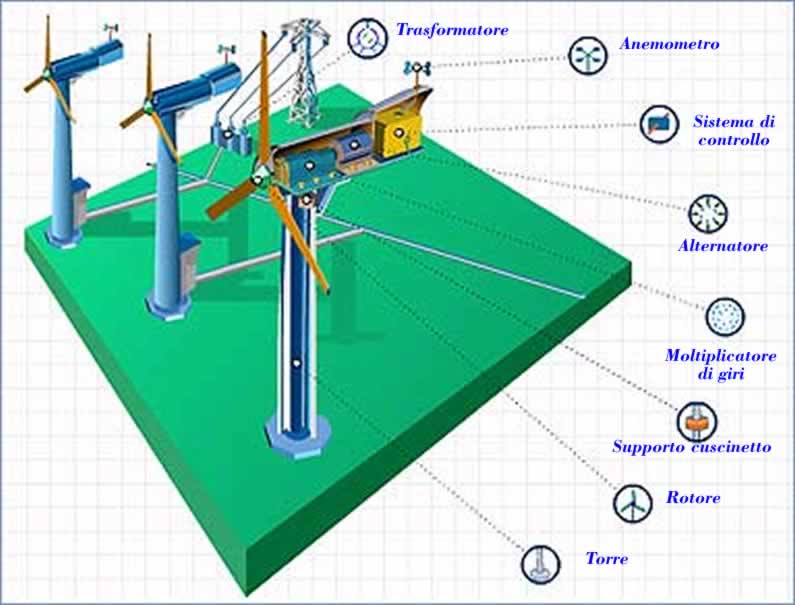

| argomento |
descrizione |
immagine |
| ENERGIA ELETTRICA |
Nel linguaggio comune, quando si parla di energia elettrica, ci si riferisce all’energia prodotta da una corrente elettrica, da un determinato flusso di cariche elettriche, vale a dire, che in un certo intervallo di tempo attraversa una data superficie. Detta specie d’energia si manifesta in natura, in una forma che non è immediatamente controllabile, non in maniera adeguata, per lo meno, e che pertanto non risulta passibile di sfruttamento da parte dell’uomo: le meravigliose scariche elettriche dei fulmini che tutti noi siano avvezzi ammirare, specie durante i temporali estivi. L’energia elettrica che trova impiego nelle nostre case e nelle attività produttive di qualsiasi genere, invece, è il risultato del processo di trasformazione di altre forme d’energia – l’energia chimica, quella meccanica, solare, termica, etc – mediante appositi dispositivi generalmente noti come generatori di corrente. Per quanto i primi studi sull’elettricità si facciano risalire, niente meno, che a Talete di Mileto (624 A.C.) e a Plinio il Vecchio (25 D.C.) gli esperimenti risolutivi ai fini dello sviluppo delle conoscenze scientifiche in materia di elettricità risalgono alla seconda metà del XVIII secolo, quando Alessandro Volta, riprendendo gli studi di Galvani sulle rane, in netta polemica con questi, intuì un nesso di causalità tra il contatto tra due distinti metalli e le contrazioni muscolari osservate sull’animale morto. I tessuti umidi e salati della rana, osservò Volta, costituivano un formidabile circuito per la circolazione dell’energia elettrica prodotta dal contatto tra i metalli. Sulla base di tali osservazioni, nel 1799 Volta inventò il primo dispositivo per la circolazione della corrente elettrica, una pila di dischi di metallo alternati da dischetti di cartone imbevuti di una soluzione salina, che fu diretta antesignana della pila elettrica e, che dal suo nome, appunto, fu battezzata pila voltaica.
Fu a Thomas Edison, un promettente inventore ed imprenditore statunitense, che dobbiamo una delle più importanti applicazioni delle scoperte di Volta, la lampadina ad incandescenza, impiegata per alimentare piccoli impianti a corrente continua alla fine dell’800, mentre risalgono ai primi del ‘900 le prime applicazioni della corrente alternata mediante l’uso di appositi dispositivi detti trasformatori.
Innumerevoli passi, com’è chiaro, sono stati fatti da allora, ed oggi, come accennato, la produzione di energia elettrica avviene su larga scala mediante un complesso processo di trasformazione di altre forme d’energia, specie meccanica e termica, di regola all’interno di grandi centrali idroelettriche, termoelettriche e nucleari, sebbene sempre maggiore considerazione vadano conquistando fonti di produzione alternativa quali le biomasse o l’energia solare.
|
|
| PRODUZIONE ENERGIA ELETTRICA |
La produzione di energia elettrica rappresenta il 'primo passaggio' nel processo che conduce dalla produzione fino all'utilizzatore finale di energia elettrica. Le altre fasi del processo sono la trasmissione di energia elettrica e la distribuzione di energia elettrica. Tipicamente la produzione avviene per conversione sempre a partire da una fonte primaria di energia attraverso le centrali elettriche e regolata dal dispacciamento (produzione centralizzata) oppure attraverso sistemi di autoproduzione attestati sulla rete elettrica di distribuzione (produzione distribuita). |
|
| CENTRALI A COMBUSTIBILE |
Le centrali termiche a carbone fanno parte della famiglia delle centrali a combustibili fossili, nelle quali l'energia contenuta nelle sorgenti primarie di energia del carbone e della lignite è convertita in energia elettrica. A causa dei residui generati da queste fonti di energia, sono richiesti dei sistemi di desolforazione dei gas di scarico particolarmente costosi. Le centrali termiche a carbone convertono fino al 45% della loro energia in elettricità. |
|
| CENTRALE ELETTRICA |
Una centrale elettrica è un impianto industriale atto alla produzione di energia elettrica. La società moderna si basa in maniera imprescindibile sull'uso dell'energia elettrica, perciò la produzione di tale energia e, conseguentemente, le centrali elettriche hanno un'importanza tecnologica e strategica fondamentale. Le centrali elettriche odierne producono energia quasi esclusivamente in corrente alternata avvalendosi di macchine elettriche denominate alternatori. Esistono eccezioni in Russia, dove, per problemi di perdite su elettrodotti estremamente lunghi, sono state create centrali elettriche in corrente continua (HVDC). |
|
| PANNELLI FOTOVOLTAICI |
Un modulo fotovoltaico è un dispositivo optoelettronico, composto da celle fotovoltaiche, in grado di convertire l'energia solare incidente direttamente in energia elettrica mediante effetto fotovoltaico, tipicamente impiegato come generatore di corrente in un impianto fotovoltaico. Può essere meccanicamente preassemblato a formare un pannello fotovoltaico, pratica caduta in disuso con il progressivo aumento delle dimensioni dei moduli, che ne hanno di fatto incorporato le finalità. Può essere esteticamente simile al pannello solare termico, ma, pur appoggiandosi entrambi sulla captazione dell'energia solare (radiazione solare) come fonte di energia primaria, hanno scopi e funzionamento molto differenti. |
|
| CENTRALI IDROELETTRICHE |
Per centrale idroelettrica si intende una serie di opere di ingegneria idraulica posizionate in una certa successione, accoppiate ad una serie di macchinari idonei allo scopo di ottenere la produzione di energia elettrica da masse di acqua in movimento.
L'energia prodotta dalle centrali idroelettriche è da classificarsi a tutti gli effetti come energia rinnovabile in quanto, almeno in teoria, l'acqua può essere riutilizzata infinite volte per lo stesso scopo senza subire un processo di depurazione. Il concetto di rinnovabilità è subordinato alla costanza del volume annuo degli afflussi integrali. |
 |
| CENTRALI EOLICHE |
L'energia eolica è l'energia ottenuta dal vento ovvero il prodotto della conversione dell'energia cinetica, ottenuta dalle correnti d'aria, in altre forme di energia (elettrica o meccanica). Oggi viene per lo più convertita in energia elettrica tramite una centrale eolica, mentre in passato l'energia del vento veniva utilizzata immediatamente sul posto come energia motrice per applicazioni industriali e pre-industriali (come ad esempio nei mulini a vento). Di fatto è stata la prima forma di energia rinnovabile, assieme a quella idraulica, scoperta dall'uomo dopo il fuoco (si pensi alle vele delle navi) e una tra quelle a sostegno della cosiddetta economia verde nella società moderna. Le applicazioni più tipiche sono i parchi eolici, sebbene possa essere sfruttata anche in installazioni stand-alone su piccola scala. |
 |